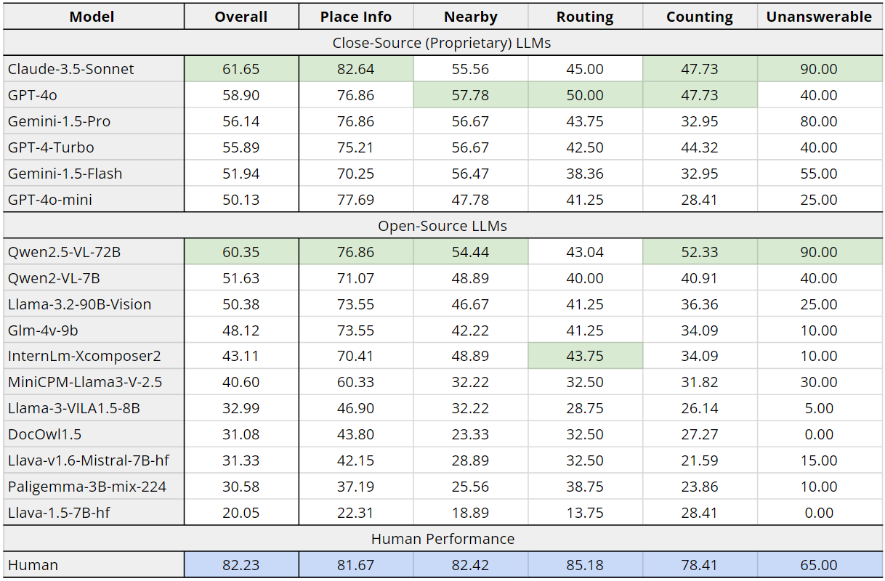

MapEval
A Map-Based Evaluation of Geo-Spatial Reasoning in Foundation Models
üèÜ ICML'25 Spotlight Paper üèÜ
Mahir Labib Dihan 1, Md Tanvir Hassan 1 *, Md Tanvir Parvez 2 *, Md Hasebul Hasan 1, Md Almash Alam 3, Muhammad Aamir Cheema 4, Mohammed Eunus Ali 1 4 †, Md Rizwan Parvez 5
1
Department of Computer Science and Engineering
Bangladesh University of Engineering and Technology (BUET)
2 Statistics, Islamic University Bangladesh
3 Bangladesh Computer Council (BCC)
4 Monash University
5 Qatar Computing Research Institute (QCRI)
†
Corresponding to mohammed.eunus.ali@gmail.com*
Equal Contribution Paper Code Dataset Leaderboard MapQaTor
Overview of MapEval. On the left, we show the annotation process, where an expert gathers either visual snapshots or textual data from Google Maps to create multiple-choice questions with ground truth labels. On the right, we depict the evaluation process and input/output for the three benchmark tasks in MapEval.
Introduction
Recent advancements in foundation models have improved autonomous tool usage and reasoning, but their capabilities in map-based reasoning remain underexplored. To address this, we introduce MapEval, a benchmark designed to assess foundation models across three distinct tasks—textual, API-based, and visual reasoning—through 700 multiple-choice questions spanning 180 cities and 54 countries, covering spatial relationships, navigation, travel planning, and real-world map interactions. Unlike prior benchmarks that focus on simple location queries, MapEval requires models to handle long-context reasoning, API interactions and visual map analysis, making it the most comprehensive evaluation framework for geospatial AI. On evaluation of 30 foundation models, including Claude-3.5-Sonnet, GPT-4o, Gemini-1.5-Pro, none surpasses 67% accuracy, with open-source models performing significantly worse and all models lagging over 20% behind human performance. These results expose critical gaps in spatial inference, as models struggle with distances, directions, route planning, and place-specific reasoning, highlighting the need for better geospatial AI to bridge the gap between foundation models and real-world navigation.
MapEval Overview
We introduce MapEval, a novel benchmark designed to evaluate the geo-spatial reasoning capabilities of foundation models and AI agents in complex map-based scenarios. MapEval addresses a critical gap in existing benchmarks by evaluating models' ability to process heterogeneous geo-spatial contexts, perform compositional reasoning, and interact with real-world map tools. It features three task types— MapEval-API, MapEval-Visual, and MapEval-Textual, that require models to collect world information via map tools, a deep visual understanding, and reason over diverse geo-spatial data (e.g., named entities, coordinates, operational hours, distances, routes, user reviews/ratings, map images), all of which remain challenging for state-of-the-art foundation models. Comprising 700 unique multiple-choice questions across 180 cities and 54 countries, MapEval reflects real-world user interactions with map services while pushing state-of-the-art models to understand spatial relationships, map infographics, travel planning, POI search, and navigation. MapEval ensures geographic diversity, realistic query patterns, and evaluation across multiple modalities. By integrating long contexts, visual complexity, API interactions, and questions requiring commonsense reasoning or recognition of insufficient information (i.e., unanswerability), it offers a rigorous framework for advancing geo-spatial AI capabilities.With MapEval, we evaluated 30 prominent foundation models, where Claude-3.5-Sonnet, GPT-4o, and Gemini-1.5-Pro showed competitive performance overall. However, significant gaps emerged in MapEval-API, with Claude-3.5-Sonnet agents outperforming GPT-4o and Gemini-1.5-Pro by 16% and 21%, respectively, and even larger disparities compared to open-source models. Our detailed analyses revealed further insights into model strengths and weaknesses. Despite these advances, all models still fall short of human performance by over 20%, especially in handling complex map images and rigorous reasoning, underscoring MapEval's role in advancing geo-spatial understanding.
Data Statistics
Distribution of tasks in MapEval
Results
Table 1: MapEval-Textual performances
Table 2: MapEval-API performances
Table 3: MapEval-Visual performances
Cite Us
@inproceedings{
dihan2025mapeval,
title={MapEval: A Map-Based Evaluation of Geo-Spatial Reasoning in Foundation Models},
author={Mahir Labib Dihan and MD Tanvir Hassan and MD TANVIR PARVEZ and Md Hasebul Hasan and Md Almash Alam and Muhammad Aamir Cheema and Mohammed Eunus Ali and Md Rizwan Parvez},
booktitle={Forty-second International Conference on Machine Learning},
year={2025},
url={https://openreview.net/forum?id=hS2Ed5XYRq}
}